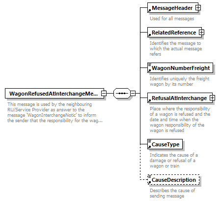

| diagram |  | ||
| namespace | http://taf-jsg.info/schemes | ||
| properties |
|
||
| children | MessageHeader RelatedReference WagonNumberFreight RefusalAtInterchange CauseType CauseDescription | ||
| annotation |
|
||
| source | <xs:element name="WagonRefusedAtInterchangeMessage"> <xs:annotation> <xs:documentation>This message is used by the neighbouring RU/Service Provider as answer to the message 'WagonInterchangeNotic' to inform the sender that the responsibility for the wagon is refused.</xs:documentation> </xs:annotation> <xs:complexType> <xs:sequence> <xs:element ref="MessageHeader"/> <xs:element ref="RelatedReference"/> <xs:element ref="WagonNumberFreight"/> <xs:element ref="RefusalAtInterchange"/> <xs:element ref="CauseType"/> <xs:element ref="CauseDescription" minOccurs="0"/> </xs:sequence> </xs:complexType> </xs:element> |